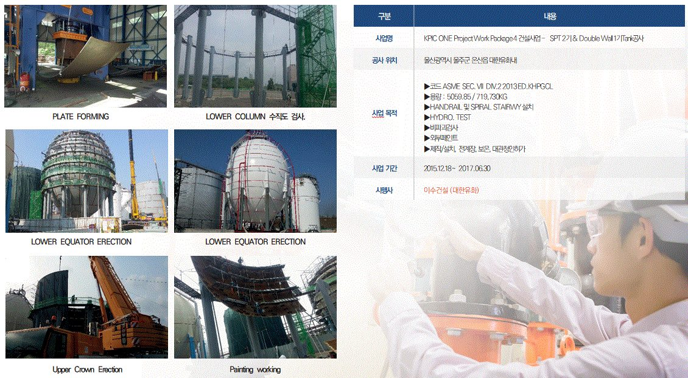
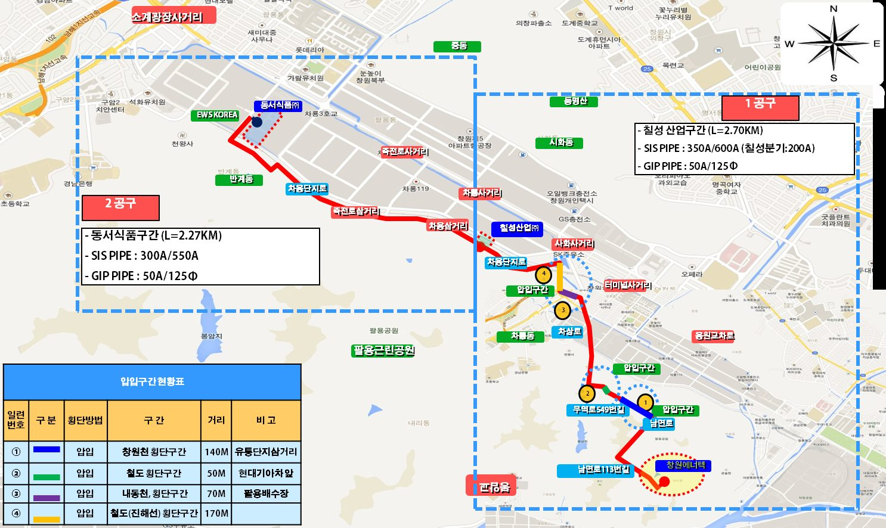
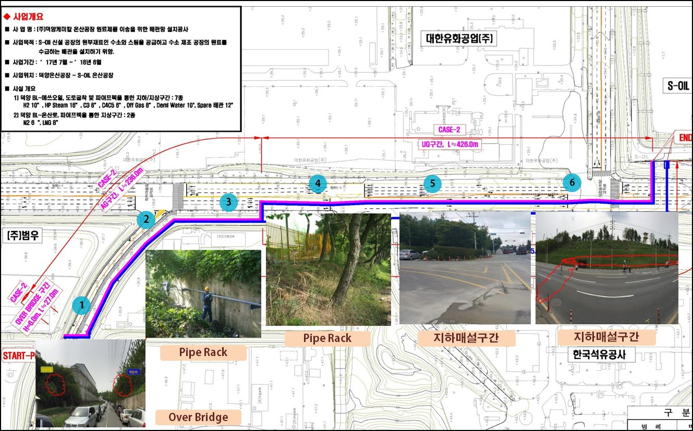
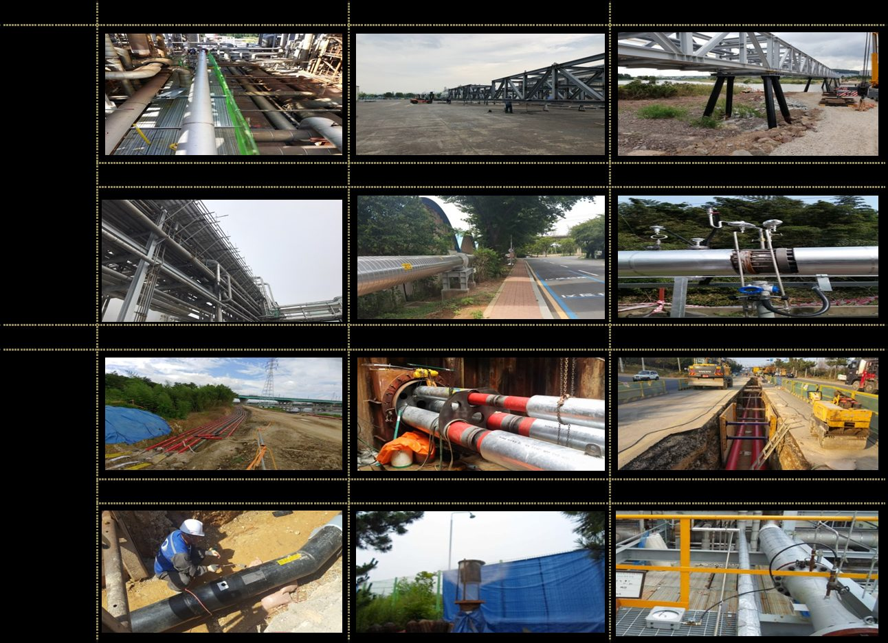

대형 탱크 EPC부터 수 km의 지하 배관망까지, 현장의 과제를 설계·제작·시공으로 해결한 사례입니다.
출처: 2026 PQ KDMTECH(26.07) 대형 프로젝트(슬라이드 38~47) · 사례 이미지는 PPT 압축본 — 고화질 사진으로 교체
PETROCHEMICAL · TANK EPC
KPIC ONE Project — 구형탱크 2기 · 이중벽 극저온 탱크 1기
대한유화 / 이수건설 · 울산 온산 · 2015.12 ~ 2017.06
- 과제
- 에틸렌·C5 저장을 위한 대형 구형탱크와 -104℃ 극저온 에틸렌 이중벽 탱크를 ASME Sec. VIII Div.2 기준으로 설계·제작·설치해야 했습니다.
- 수행
- 설계부터 제작·현장 설치·전계장·보온·인허가까지 일괄 수행했습니다. 수압시험·비파괴검사·외부 도장, 핸드레일·나선계단까지 포함했습니다.
- 결과
- 구형탱크 2기(666 ton·425 ton)와 이중벽 탱크 1기(ID 18,550/20,550mm)를 완공했습니다.

ENERGY · STEAM PIPING
창원에너텍 스팀배관 설치공사
창원에너텍 · 창원 의창구 · 2016.01 ~ 2016.12
- 과제
- 소각시설 폐열로 만든 스팀(211℃·19K·38 t/h)을 인근 식품 공장에 공급할 지하 배관이 필요했습니다.
- 수행
- 도로 굴착 4.21 km, 하천 0.43 km, 사면 녹지 0.33 km 구간에 SIS 350A/600A 지하매설 배관 4.97 km를 시공했습니다.
- 결과
- 동서식품·칠성산업·동원F&B가 LNG 보일러 대신 폐열 스팀을 쓰게 되어 원가와 CO₂ 배출을 줄였습니다.

REFINERY · PIPE NETWORK
덕양 온산공장 원료·제품 이송 배관망
덕양케미칼 · 울산 온산 · 2018.01 ~ 2018.08
- 과제
- S-OIL 신설 공장과 덕양 HC-2 플랜트를 잇는 수소·스팀·원료 배관 9종이 필요했습니다.
- 수행
- 도로 굴착 426 m, 파이프랙 263 m 구간에 H2·HP Steam·C3·C4C5·Tail Gas·Demi Water·N2·LNG 배관을 지상·지하로 시공했습니다.
- 결과
- 고온·고압 스팀(427℃·45K, 약 50 t/h) 공급 배관을 포함한 9종 배관망을 완공했습니다.

PETROCHEMICAL · UNDERGROUND
온산~울산 지하관로 배관 및 강교 철골공사
대한유화 · 온산공장 ~ 울산공장 · 2018.03 ~ 2018.12
- 과제
- 대한유화 온산공장과 울산공장 사이 5 km 구간에 위험물·고압가스 배관 8라인을 증설해야 했습니다.
- 수행
- 지하 매설, 수관교, 압입 2개소, 파이프랙 구간에 옥텐·메탄올·AN·SM(위험물)과 에틸렌(고압가스) 배관을 시공했습니다.
- 결과
- 약 5,000 m × 8라인, 지하 CS 38,584 D/I · SUS 4,548 D/I 용접을 완료했습니다.
입력 예정 — 사례 추가
정유·석화·에너지·제조 산업군별 2~3건 (과제 → 수행 → 결과) — 오픈 후 추가 가능
정유·석화·에너지·제조 산업군별 2~3건 (과제 → 수행 → 결과) — 오픈 후 추가 가능
프로젝트를 상담하세요.
설계부터 제작·시공, AX까지 한 번에 검토해 드립니다.